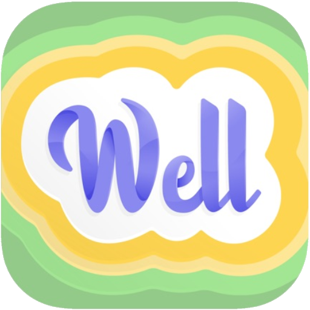

Resources
Publications, free evidence-based apps, and trusted support tools for trauma, stress, and everyday emotional wellness.
Publications and research
These works reflect my commitment to culturally responsive, evidence-based care, particularly in trauma, PTSD, and health equity.
Bell, S. L., Bosch, J., Tang, J. (2024). COVID-19 and AAPI Healthcare Providers: The Importance of an Ecological Lens.
Trauma Psychology News (APA Division 56)
Explores systemic and racialized stressors experienced by AAPI healthcare professionals during the COVID-19 pandemic.Bosch, J., et al. (2020). PTSD Treatment Response and Quality of Life in Women with Childhood Abuse Histories.
Psychological Trauma: Theory, Research, Practice, and Policy
Examines the outcomes of evidence-based PTSD treatment in women with trauma histories.Bosch, J., et al. (2019). Adverse Childhood Experiences and Oral Health.
Journal of Interpersonal Violence
Highlights the connection between early trauma and long-term health outcomes.Additional peer-reviewed publications are available upon request.
Helpful apps for therapy and wellness
Free, evidence-based mobile apps developed by the U.S. Department of Veterans Affairs National Center for PTSD. They can complement our work together, supporting you with trauma, stress, and day-to-day emotional regulation. See all VA apps.
Trauma-focused apps
Designed to support clients in evidence-based trauma therapies.


PE Coach
For those in Prolonged Exposure Therapy (PE). Helps track progress, record exposures, and access session materials.
General wellness and support apps
Helpful for mindfulness, sleep, and overall emotional well-being.

Mindfulness Coach
Learn and practice mindfulness meditation to reduce stress, improve emotional balance, and cope with unpleasant thoughts and emotions.
Learn more and download
Insomnia Coach
Based on Cognitive Behavioral Therapy for Insomnia (CBT-i), with a guided plan and tools to track and improve your sleep habits.
Learn more and download
WellWithin Coach (for women)
Designed for women, it supports mental health and common challenges like stress, depression, and trauma at every stage of life.
Search “WellWithin Coach” in your app store.
Additional resources
You may also find the following helpful.
For trauma and PTSD support
National Center for PTSD: self-help toolsEducation and free tools from the VA’s National Center for PTSD. National Alliance on Mental Illness (NAMI): PTSD informationSymptoms, treatment, and stress reduction strategies, including how trauma and PTSD differ. American Psychological Association (APA): PTSD treatmentAn overview of evidence-based treatments for PTSD, with information for patients and families.Ready to take the next step?
Book a free 15-minute phone consultation to see if we’re a good fit.
Contact me